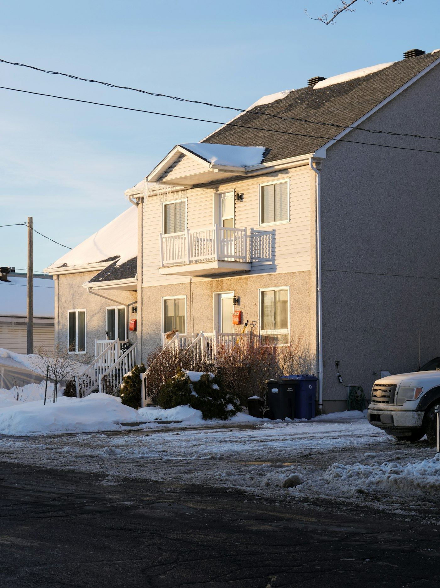

Huerkamp Home Group
Free guide
House hacking, financing, the numbers to run and the Minnesota rules every landlord needs to know.
Free guide for Twin Cities investors
A rental property can build wealth through rent, loan paydown and appreciation. It is also a small business, with tenants, repairs, rules and taxes. The investors who do well run the numbers before they fall for a property.
This guide covers the most common starting point, a duplex you live in, and the rules for Minnesota landlords. See investment property and duplexes for sale. Questions? Call or text us at (612) 502-7653.
Getting started
Buying a duplex, triplex or fourplex and living in one unit (often called house hacking) lets the rent from the other units help with the payment, and it opens owner-occupant financing.
FHA loans can be used for two- to four-unit homes you live in, with as little as 3.5% down for qualified borrowers. Conventional loans also allow low down payments on owner-occupied two- to four-unit homes. Investment property loans for homes you won't live in usually require more down and cost more.
Lenders may count part of the expected rent from the other units toward your income, usually based on an appraiser's rent estimate or existing leases. Ask early; it changes what you qualify for.
Running the numbers
Use the current leases and what similar units nearby actually rent for, not the listing's estimate. Ask for a rent roll and copies of the leases.
Property taxes, insurance, utilities the owner pays, repairs, capital replacements (roof, furnace, appliances), vacancy, property management if you use it, and snow and lawn care. Get the seller's actual utility and repair history.
Rent minus all expenses and the mortgage payment is your cash flow. Divide a year of cash flow by the cash you put in to see your return on that cash, and compare it with other uses of your money.
In Minnesota, homestead classification applies to the home you live in. In a duplex you live in, only your unit usually qualifies; the rental unit is taxed as rental property. Ask the county assessor.
Inspecting a rental
Look at each unit, each furnace and water heater, the separate meters if any, and the common areas. Older two- to four-unit buildings often need electrical, plumbing and egress updates.
Many Twin Cities cities, including Minneapolis, require a rental license or registration and inspections before you can rent. Check the city's requirements, and any time-of-sale inspection, before you buy.
Being a Minnesota landlord
The Minnesota Attorney General publishes "Landlords and Tenants: Rights and Responsibilities," a free handbook that covers leases, repairs, entry, deposits and evictions. Read it before your first lease.
Minnesota law requires landlords to return the deposit with interest, or give a written explanation of any amount kept, within 21 days after the tenancy ends and the tenant gives a forwarding address.
Advertising, screening, rents and rules must treat every applicant the same under federal, Minnesota and local fair housing laws. Use the same written screening criteria for everyone.
A rental needs a landlord or dwelling policy, not a regular homeowners policy, and you may want an umbrella policy. Require tenants to carry renters insurance in the lease.
Rental income, expenses and depreciation are reported on your tax return. Keep every receipt and talk to a tax adviser about how depreciation and a future sale will be taxed.
Ready when you are
Huerkamp Home Group has helped buyers and sellers across the Twin Cities since 2002, and has been a Dave Ramsey Endorsed Local Provider for more than 15 years.
Sources
Photos: Phil Desforges (cover), Ferdinand Asakome and Tazz Anderson on Unsplash. General information, not legal, tax or lending advice. Rules and programs change; confirm details with your lender, title company, tax adviser or attorney. Huerkamp Home Group is a team of licensed REALTORS® with Keller Williams Preferred Realty. Equal Housing Opportunity.